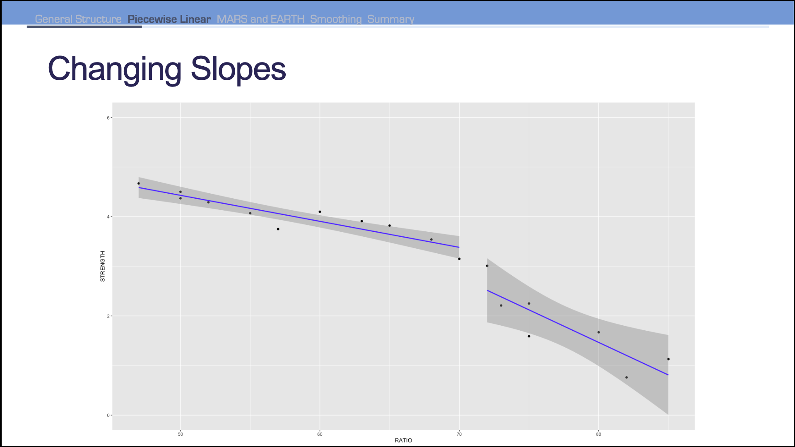
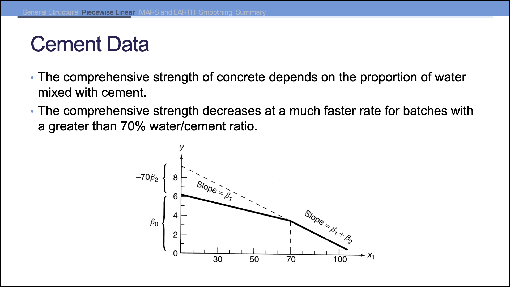

What if you had a linear relationship between \(x\) and \(y\), but the slope changes? Different pieces might have a straight-line relationship, but a typical single straight-line model will not be a good fit for this type of data.

Figure 1: Changing Slopes
A model where different straight-line relationships for different intervals in the predictor variable is called the piecewise linear regression model. For two slopes, the model follows as:
How do we split up the pieces? \(x_2\) depends on how the value of \(x_1\) compares to the knot value:
\[
x_2 = \begin{cases}
1 & x_1 > k \\
0 & x_1 \leq k
\end{cases}
\]

Figure 2: Cement Example
Code
cement <-read_csv("data/cement.csv")
Rows: 18 Columns: 5
── Column specification ────────────────────────────────────────────────────────
Delimiter: ","
dbl (5): BATCH, STRENGTH, RATIO, X2, X2STAR
ℹ Use `spec()` to retrieve the full column specification for this data.
ℹ Specify the column types or set `show_col_types = FALSE` to quiet this message.
Code
cement_lm <-lm(STRENGTH ~ RATIO + X2STAR, data = cement)ggplot(cement, aes(x = RATIO, y = STRENGTH)) +geom_point() +geom_line(data = cement, aes(x = RATIO, y = cement_lm$fitted.values)) +ylim(0, 6)
2.1 Extensions - Discontinuous
The previous approach had piecewise functions that are continuous. The following is the discontinuous version for two straight lines:
cement_lm <-lm(STRENGTH ~ RATIO + X2STAR + X2, data = cement)summary(cement_lm)
Call:
lm(formula = STRENGTH ~ RATIO + X2STAR + X2, data = cement)
Residuals:
Min 1Q Median 3Q Max
-0.53167 -0.15513 0.06171 0.17239 0.49451
Coefficients:
Estimate Std. Error t value Pr(>|t|)
(Intercept) 7.04975 0.68558 10.283 6.6e-08 ***
RATIO -0.05240 0.01174 -4.463 0.000536 ***
X2STAR -0.07888 0.02686 -2.937 0.010830 *
X2 -0.60388 0.26877 -2.247 0.041302 *
---
Signif. codes: 0 '***' 0.001 '**' 0.01 '*' 0.05 '.' 0.1 ' ' 1
Residual standard error: 0.2916 on 14 degrees of freedom
Multiple R-squared: 0.9548, Adjusted R-squared: 0.9451
F-statistic: 98.57 on 3 and 14 DF, p-value: 1.188e-09
For \(k\) straight lines, we can produce \(k - 1\) knot values to model our data.
Figure 3: Extension - Knots
3 MARS (Multivariate Adaptive Regression Splines)
MARS is a generalization of piecewise linear regression. It is a non-parametric regression method that uses a series of nonlinearities and interactions between variables in a additive form. Essentially, uses piecewise regression to split into pieces then potentially uses either linear or nonlinear patterns for each piece.
MARS looks for a point in the range of \(x\) where two linear functions on either side of the point provides the least squared error.
Figure 4: Different Knot Values
Algorithm continnues on each piece of piecewise function until many knots are found–this will overfit your data. MARS uses a pruning algorithm to remove knots that do not improve the model.
The pruning is calculated using generalized cross-validation which is a computational shortcut for leave-one-out cross-validation.
For open-source software, the implementation is EARTH (Enhanced Adaptive Regression Through Hinges).
Code
library(earth)
Loading required package: Formula
Loading required package: plotmo
Loading required package: plotrix
Loading required package: TeachingDemos
Code
mars1 <-earth(Sale_Price ~ Garage_Area, data = training)summary(mars1)
Call: earth(formula=Sale_Price~Garage_Area, data=training)
coefficients
(Intercept) 124159.039
h(286-Garage_Area) -60.257
h(Garage_Area-286) 297.277
h(Garage_Area-521) -483.642
h(Garage_Area-576) 733.859
h(Garage_Area-758) -356.460
h(Garage_Area-1043) -490.873
Selected 7 of 7 terms, and 1 of 1 predictors
Termination condition: RSq changed by less than 0.001 at 7 terms
Importance: Garage_Area
Number of terms at each degree of interaction: 1 6 (additive model)
GCV 3427475346 RSS 6.94092e+12 GRSq 0.4492014 RSq 0.4556309
Each value in the EARTH output represents a knot / hinge value. For example, h(Garage_Area - 286) is the knot value when Garage_Area is 286. A new line is created at this point.
Code
ggplot(training, aes(x = Garage_Area, y = Sale_Price)) +geom_point() +geom_line(data = training, aes(x = Garage_Area, y = mars1$fitted.values), color ="blue")
Creating a model on the full data:
Code
mars1 <-earth(Sale_Price ~ ., data = training)summary(mars1)
Call: earth(formula=Sale_Price~., data=training)
coefficients
(Intercept) 319493.46
Central_AirY 20289.49
h(4-Bedroom_AbvGr) 9214.66
h(Bedroom_AbvGr-4) -23009.05
h(Year_Built-1977) 1275.57
h(2004-Year_Built) -336.64
h(Year_Built-2004) 5315.57
h(13869-Lot_Area) -2.09
h(Lot_Area-13869) 0.22
h(First_Flr_SF-1600) 104.91
h(2402-First_Flr_SF) -71.56
h(First_Flr_SF-2402) -176.61
h(1523-Second_Flr_SF) -53.13
h(Second_Flr_SF-1523) 426.63
h(Half_Bath-1) -45378.31
h(2-Fireplaces) -14408.56
h(Fireplaces-2) -26072.58
h(Garage_Area-539) 101.97
h(Garage_Area-1043) -294.30
h(Gr_Liv_Area-2049) 65.21
h(Gr_Liv_Area-3194) -159.79
Selected 21 of 24 terms, and 10 of 14 predictors
Termination condition: Reached nk 29
Importance: First_Flr_SF, Second_Flr_SF, Year_Built, Garage_Area, ...
Number of terms at each degree of interaction: 1 20 (additive model)
GCV 1033819964 RSS 2.036439e+12 GRSq 0.8338641 RSq 0.8402842
Notice that our output shows how many predictors were used in the model. We also have a list of variable importance. What is going on in the variable importance?
3.1 Variable Importance
There is one “subset” for each model size (1 term, 2 terms, etc.)–the best model of that size. The variable importance is the number of times that variable was used in the best model of that size. The more subsets of models the variable appears in the better the variable.
Residual sum of squares is a scaled version of decrease in residual sum of squares relative to the previous subset. GCV is an approximation of RSS on leave-one-out cross validation.
Each variable following the first variable is the amount of improvement in the residual sum of squares relative to the amount of improvement in the first variable.
Be careful, we have no notion of how these variables affect the response just which variables we think are the most important in the model. We trade interpretability for predictive power.